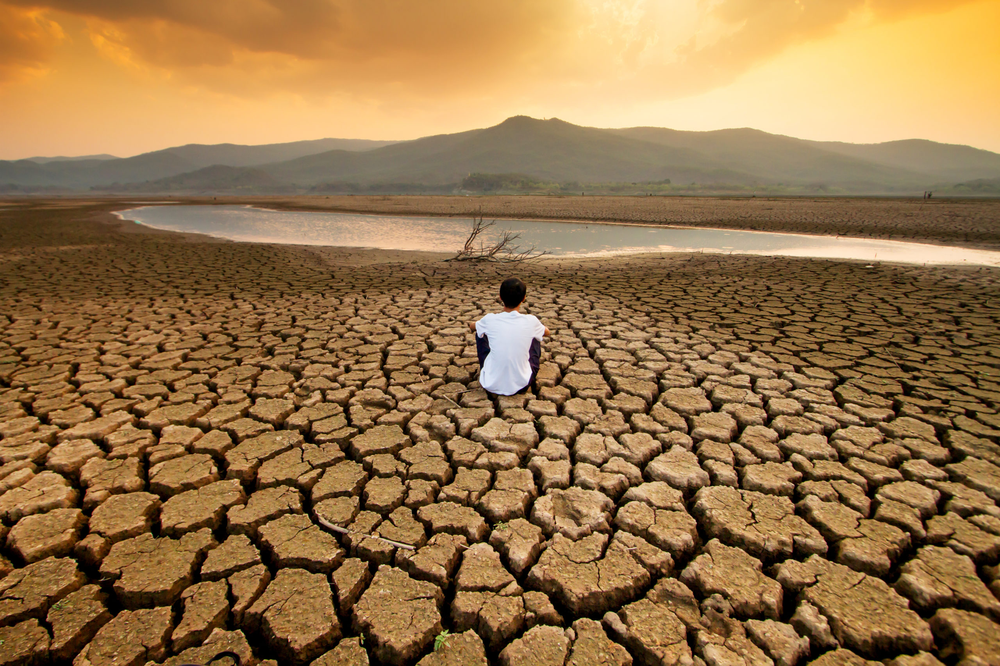

EFECTOS CLIMATICOS

En casi todas las zonas terrestres se ven más días calurosos y olas de calor; el año 2020 fue uno de los más calurosos registrados. Las temperaturas más elevadas aumentan las enfermedades relacionadas con el calor y pueden dificultar el trabajo y los desplazamientos. Los incendios forestales se producen con mayor facilidad y se propagan más rápidamente cuando las temperaturas son más altas.
Perú, el tercer país más vulnerable a los riesgos climáticos
Veamos por qué:
- El 52% de la población vive en condiciones de pobreza y un 21 % subsiste en condiciones de extrema pobreza (segun el INEI).
- Un gran porcentaje de la población se dedica a la agricultura, la pesca y otras labores que son afectadas directamente por el clima. Tenemos 28 de los 35 climas identificados en el planeta (SENAMHI).
- En la última década, las emergencias por peligros naturales se incrementaron más de 6 veces, el 72% de ellas fueron de origen climático.
- En los últimos años, hemos perdido el 22% de la superficie de nuestros glaciares, que son el 71 % de los glaciares tropicales del mundo. Esta pérdida representa 7 000 millones de metros cúbicos de agua, que equivale 01 consumo de la población de Lima durante 10años.
- Al menos el 80% de nuestra electricidad se genera en centrales hidroeléctricas.
- Las instituciones tienen una capacidad de acción limitada.
- No contamos con suficientes recursos financieros ni tecnológicos para adaptarnos y actuar frente a estos problemas. En el Perú, a pesar de que no existe una relación probada entre el Cambio Climático y el Fenómeno El Niño, se debe seguir invirtiendo en sistemas de predicción climática.